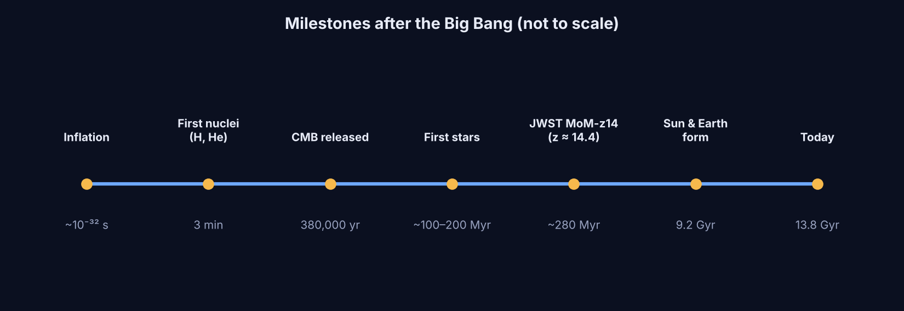
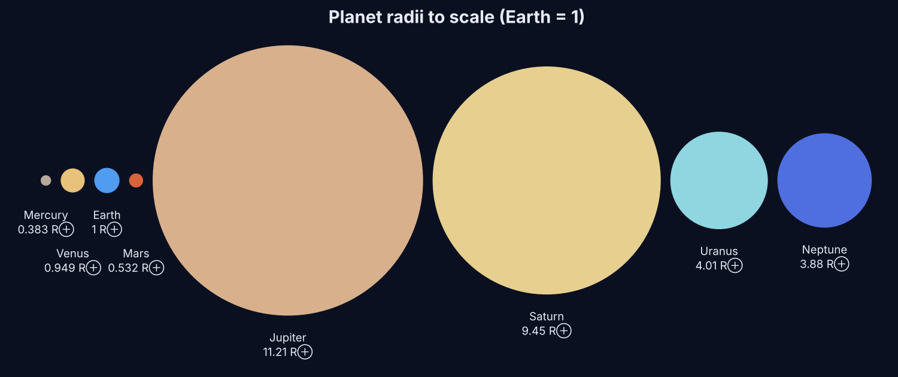
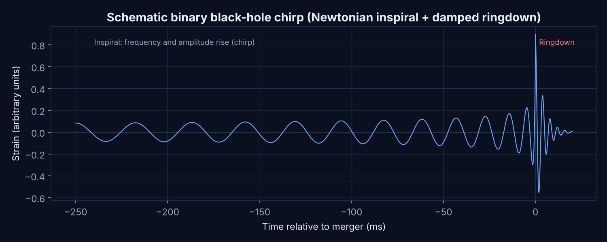
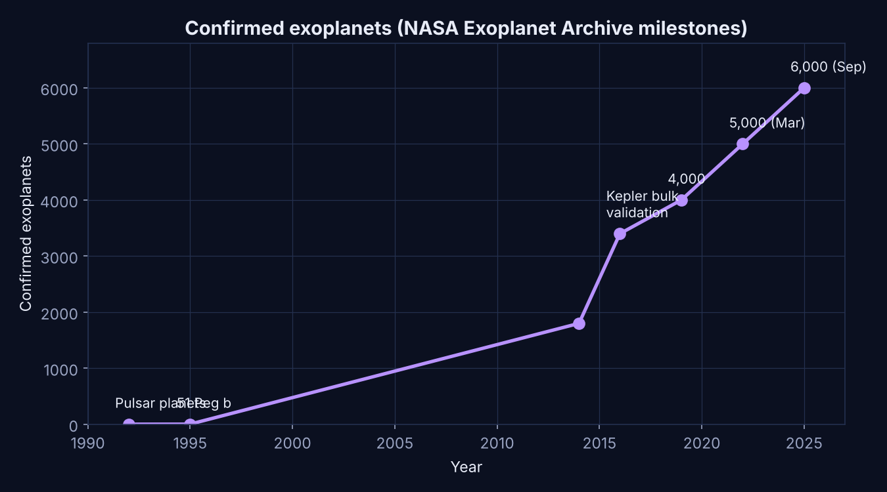

Explore the encyclopedia
🪐 Solar System
✨ Stars & galaxies
🚀 Exploration
🔬 Evidence
In-depth articles by section
Journey of the Universe
From the Big Bang and the first light to the first stars, the size of the cosmos, dark matter and energy, and how it all ends.
6 articlesStars & the Sun
How stars are born, live and die; supernovae; white dwarfs, neutron stars and pulsars; every kind of dwarf star; star patterns; and our Sun.
6 articlesBlack Holes & Exotic Physics
How black holes work, gravitational waves, white holes and wormholes, and cosmic collisions.
4 articlesPlanets & Life
How planets form, every type of planet discovered, how we find them, space rocks, and the search for life.
5 articlesExploration
Telescopes from 1608 to JWST, the space race and Moon landings, how rockets and orbits work, living in space, and India's space programme.
5 articlesResearch Now (2026)
Up-to-date research notes on cosmology, gravitational waves, the solar system, exoplanets, small bodies, biosignatures, missions and the Sun.
8 articlesPaper Library
Structured analyses of key papers, each readable as a PDF.
9 articlesData & Tools
The live tracker, interactive labs, figure gallery and open datasets.
4 articlesFeatured deep dives

The Big Bang: How the Universe Began
13.8 billion years ago the universe was hot, dense and expanding. Here is what happened in the first seconds, minutes and 380,000 years, and how we know.

How Big Is the Universe? From the Earth to the Cosmic Horizon
A journey of scale, from the Earth–Moon distance to the observable universe 93 billion light-years across, and what 'vast and empty' really means.

How Black Holes Work
Event horizons, singularities, spaghettification, time dilation and spin, explained step by step, with the evidence that black holes are real.
White Holes and Wormholes: Science or Science Fiction?
Both appear as solutions of Einstein's equations, but neither has ever been observed. Here is what the maths says, the problems, and the ideas physicists still take seriously.

Types of Planets Discovered
Over 6,000 exoplanets are now confirmed. They include hot Jupiters, super-Earths, sub-Neptunes, lava worlds, water worlds, puffy planets, circumbinary 'Tatooines' and rogue planets with no star.
India in Space: ISRO's Journey
From launching rocket parts by bicycle in the 1960s to landing near the Moon's south pole, studying the Sun, and preparing Gaganyaan.
About this encyclopedia#
Outer Space Research is a long-form, sourced reference to the universe, modelled on long-running references like NASA Science, ESA, HubbleSite, the Exoplanet Archive and Wikipedia’s astronomy portal.
- A journey from the Big Bang to today: inflation, the first light, first stars, galaxies, dark matter and dark energy, and the fate of the universe.
- Catalogs of planets, moons, stars, exotic objects, exoplanets, galaxies and nebulae, asteroids and comets, space rocks, missions and rockets, astronauts and animals in space, telescopes, and all 88 constellations, each with a real photo, a Wikipedia overview and, where one exists, a sound or NASA sonification.
- A live tracker of 15 missions and research streams on every page.
- A paper library with structured analyses readable as PDFs.
Where to start#
- New to astronomy? Read The Big Bang, then How big is the universe?.
- Curious about black holes? Start with How black holes work.
- Want to see the sky? Browse the Constellations.
47 articles · 593 catalog entries · ~13k words · 24 distinct sources · reviewed 2026-11-15